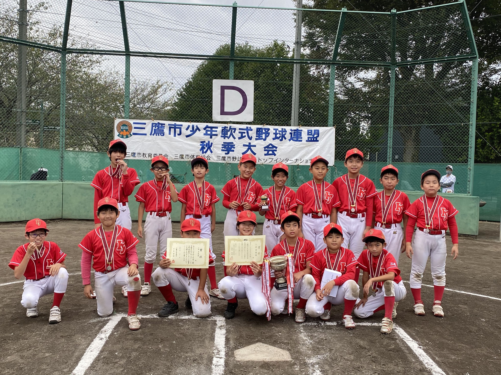

Team
チーム紹介
井口ヤングは、野球を通じて青少年の育成を図ることを目的としている、東京都三鷹市の少年野球チームです。

Overview
東京都三鷹市で活動する地域密着チーム
チームはとても明るくアットホームで、部員は1年生から6年生まで、指導者や保護者も一致団結して盛り上げています。
- 設立：1977（昭和52）年
- 後援：井口協和会
- 活動日時：1〜12月、主に土曜・日曜・祝日
- 活動地域：井口小学校、井口特設グラウンド、大沢グラウンドなど
活動場所
練習場所は、おもに井口小学校、井口特設グラウンド、大沢グラウンドです。練習試合などで他の小学校へ遠征に行くこともあります。
にしみたか学園 三鷹市立井口小学校
〒181-0011 東京都三鷹市井口3丁目7-11
Teams
チーム編成
Staff
監督・コーチ
指導者は井口ヤングの部員やOBの保護者を中心に、明るく楽しく、愛情をもって指導します。
Equipment
必要な道具
ユニフォームや練習着、グローブ、バットなどは各自で用意します。お下がりやバザーもあるため、代表・監督・コーチに相談しながら揃えましょう。
ユニフォーム・帽子・ヘルメットは井口ヤングオリジナルです。取扱店の カズマスポーツ で購入をお願いします。
Q and A